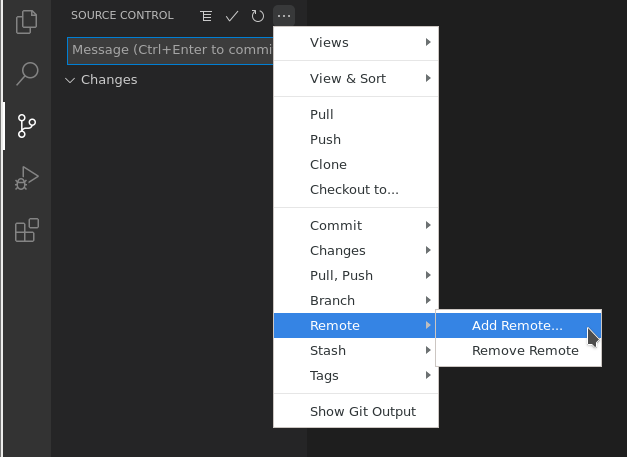

Introduction
Illarion game content like items, NPCs, quests, etc. is defined in scripts written in
Lua 5.2
with Illarion specific extensions. This document describes these extensions. Those scripts can be found in the
official repository, which has two branches. The master branch reflects the scripts used by the live game, while
the develop branch is used to prepare the next release. You can fork that repository on GitHub and clone it to your
hard drive for development or testing using the
local development server.
The recommended editor for Illarion scripting is
Visual Studio Code, which is available for Linux, Windows and macOS. You can use the extension rog2.luacheck to
automatically perform some code checks ahead of pull requests. If you are using Visual Studio Code and open the
repository directory as a folder, the required ISO 8859-1 encoding will be used automatically. A more detailed
description of setting up and using a development environment is available in the tutorial.
Learning Lua
If you are new to programming in general or new to Lua, you will need to learn Lua 5.2 if you want to make changes beyond searching for and fixing text errors. Luckily Lua is a fairly simple language and I would suggest beginning by studying Programming in Lua chapters 1 to 5.1. You can skip 1.4, since we won't be using a stand-alone interpreter, but rather our local Illarion server. While this book is geared towards Lua 5.0, the basics did not change. Before you get started, make sure to follow the tutorial to set up a development environment.
Minimal script for testing Lua code
local M = {}
function M.UseItem(user, item, actionState)
-- your code here
end
return M
While learning, you will want to test your code snippets. To do that, you can go to an item script of your choosing,
e.g. item/id_9_saw.lua and delete all of its contents. Then paste the example on the right and write your code inside
the UseItem entry point. Make sure to reload (!fr in the client) the server after saving your script to load any
changes. Now you can run your code by simply using that item. To create an item with e.g. id 9, use !create 9 in your
client (the item might be created in your bag).
Since print does not exist here (where would we print output anyway), you need to use another means of producing
output. You can either use log("some output text") to send output to the server log, use debug("some output text")
to send output to the server log with a call stack, or use user:inform("some output text") to send output to your
client.
If you struggle or are not sure about something, you are always welcome to ask for help in Discord. Developers will be notified if you use the channel Development > beginners.
Structure
item/apple.lua
-- mandatory license header omitted for the sake of brevity
local M = {}
function M.UseItem(user, item)
-- code handling items being used
end
function M.LookAtItem(user, item)
-- code handling items being looked at
end
-- more entry points can follow
return M
Every time a certain event happens (e.g someone using an item, a monster dying, someone logging into the game, etc.) a script function is called. The name of that script is usually defined in the database, except for server scripts which have a fixed name and implement very specific server behaviour not tied to a particular game object.
The executed function is called an entry point, since it is run directly by the server. Scripts
defined in the database, as well as server scripts, return a table containing expected entry points.
A script does not need to include all possible entry points. For example, if an item has no UseItem entry point,
nothing happens when a player uses the item.
Database Changes
INSERT INTO triggerfields VALUES (330, 536, -24, 'triggerfield.irundarmirror');
INSERT INTO npc VALUES (2, 61, 334, 538, -26, 0, false, 'Neil Peter Caldori', 'npc.caldori');
UPDATE items SET itm_script = 'item.food' WHERE itm_id = 15;
In the second example everything after npc_script will get a default value. You probably do not want an NPC with white skin, though.
You need to track all changes you make to the database. This will allow you to
- replay any changes if you need to reset your database to incorporate changes to the official database.
- have a changeset to include in your pull request for testing and to update the official database upon merging.
To apply your changes easily, you need to write them down in SQL. Typically these will be INSERT statements for new database entries (new NPCs, quests, trigger fields, ...) and UPDATE statements for modifying existing entries (e.g. adding a script to an item). The syntax is pretty simple:
INSERT INTO <table name> VALUES (<list of all required values>);
UPDATE <table name> SET <field name> = <value> WHERE <id field> = <entry id>;
Notation
Function definitions in this document are given in the following format:
<return values> <function name>(<parameters>)
return valuesstands for a list of variables returned from the function and is omitted if the function does not return anything.<function name>is the name of the function.<parameters>is a list of type/name pairs, separated by space. Optional parameters are given in brackets. Default parameters are assigned the value they will be given if left out of a call.
Example:
weight, value example(Item item [, number amount = 1])
The function example given here returns weight and value. It takes an Item called item as well as an optional
number called amount as parameters. If amount is not passed into the function it will be set to 1.
Tutorial
This tutorial shows how to get started with Illarion content development. It gives a basic introduction into our development process and policies, i.e. what you need to know to contribute to Illarion development. We will go through the steps to set up a development environment and show how projects (even small ones, like fixing spelling errors) are started and shared.
Should you encounter any problems with this tutorial, please do not hesitate to ask for help on Discord. Feedback and suggestions on how to improve it are also welcome!
Initial Setup
- Create a free GitHub account if you don't have one and verify your email address.
- Fork the Illarion game content to your GitHub account.
- Fork the Illarion maps to your GitHub account.
- Install and run Visual Studio Code.
- Select Source Control on the left tool bar, then Clone Repository and Clone from GitHub.

- Authorize Visual Studio Code to access GitHub.
- In Visual Studio Code, select the Illarion-Map repository and afterwards a location to save it to. Make sure the folder is open in Visual Studio Code.
- Select Source Control again. Select ... > Remote > Add Remote..., insert
https://github.com/Illarion-eV/Illarion-Mapand name it upstream. If asked, you can choose to periodically rungit fetch.  - On the bottom blue bar, click the current master branch and select origin/develop.

- Select File > Close Folder and repeat steps 5, 7, 8 and 9 for the Illarion-Content repository, using
https://github.com/Illarion-eV/Illarion-Contentas remote URL. Name the remote upstream as well. - Close the Illarion-Content folder and re-open it. You will be asked to install recommended extensions. Do so. These extensions will offer better support for Lua, Git and point out problems in your Lua code.

- Every change you make needs a name and an email. Use a name Illarion devs know you by and an email you can be reached at:
- From the menu select View > Terminal.
- Enter:
git config --global user.name "your name here" - Enter:
git config --global user.email your@email.here
- Setup the local Illarion development server. Use your Illarion-Map and Illarion-Content directories under 2. Setup.
Starting a Project
- Make sure the Illarion-Content folder is open and the bottom blue bar shows develop.
- Select Source Control on the left tool bar and select ... > Pull, Push > Pull from... > upstream > upstream/develop.
- Select develop > Create new branch... and name it feature/hello-illarion. Notice that the blue bar shows the new branch.
- Select Explorer on the left bar and open server > login.lua.
- Find the line
function M.onLogin(player)and under it enterplayer:inform("Hello Illarion Development!") - Save the file.
- Start your local server and connect with your Illarion client to check for the new login message. To reload scripts while the server is running, use the
!frcommand within the client.
- Under Source Control you can now see login.lua as a modified file. Click + to stage the changes. login.lua will now show under Staged Changes.
- Enter a message title "Say hello on login", insert a blank line and write a more detailed message below. Press CTRL + Enter to submit the commit of all staged changes.
- Under Source Control select ... > Push to send your changes to your GitHub repository.
Sharing your Work
- On GitHub go to your Illarion-Content repository and in the left-hand combo box select the new feature/hello-illarion branch.

- Either click Compare & pull request or Contribute > Open pull request.
- Switch the base branch from master to develop.
- Enter a suitable title and description before not clicking Create pull request, as this would notify a lot of developers and this is not a real project.
Entry Points
As described in the introduction, entry points are the interface between server and scripts. The server calls entry points on a variety of events to perform the implemented game mechanics. This allows the server to remain unchanged and running, while scripts are updated at run-time.
Entry points are expected to be functions with pre-defined names, which the server will call. For the server to be able to find the script these functions are in, the script is named in the db entry of the appropriate game entity. The only exception are server scripts, which just have one exact name.
The server expects scripts to return a table, which contains all implemented entry points. In the following definitions only the function signature is given for clarity.
Those scripts which are entered into the database, need to be named in the following format:
- Paths are relative to the repository base directory.
- Directory/file names are seperated by a full stop (
.). - The
.luaextension is omitted.
E.g. a script item/apple.lua would be entered as item.apple.
Some scripts provide a special global service for the server. These scripts are not attached to a specific game object
(e.g. item, monster or field), but define general or in some cases default behaviour. All of these scripts are located
in the server directory. Server scripts should be edited with great caution, since breaking one of those scripts would
break the related behaviour for the server.
Combat
Combat script with all available entry points
local M = {}
function M.onAttack(attacker, defender)
end
return M
Script file: server/standardfighting.lua
onAttack(Character attacker, Character defender)
Is called every time attacker tries to hit defender in physical combat.
Death
Death script with all available entry points
local M = {}
function M.playerDeath(user)
end
return M
Script file: server/playerdeath.lua
playerDeath(Character user)
Is called when user dies. Here you can handle e.g. penalties for dying.
Depot
Depot script with all available entry points
local M = {}
function M.onOpenDepot(user, depot)
return true
end
return M
Script file: server/depot.lua
boolean onOpenDepot(Character user, Item depot)
Is called when user tries to open a depot. Has to return true if user is allowed to open this depot and
false otherwise.
Fields
These entry points are bound to a single field (x, y, z) on the map.
SQL
INSERT INTO triggerfields VALUES (X, Y, Z, 'SCRIPT_NAME');
Field script with all available entry points
local M = {}
function M.ItemRotsOnField(oldItem, newItem)
end
function M.MoveFromField(user)
end
function M.MoveToField(user)
end
function M.PutItemOnField(item, user)
end
function M.TakeItemFromField(item, user)
end
return M
Database table: triggerfields
ItemRotsOnField(Item oldItem, Item newItem)
oldItem had its wear reduced to zero on this field and rots into newItem.
MoveFromField(Character user)
user moves away from this field.
MoveToField(Character user)
user moves onto this field.
PutItemOnField(Item item, Character user)
user puts item on this field.
TakeItemFromField(Item item, Character user)
user takes item from this field.
Item Inspection
Item inspection script with all available entry points
local M = {}
function M.lookAtItem(user, item)
local lookAt = ItemLookAt()
return lookAt
end
return M
Script file: server/itemlookat.lua
ItemLookAt lookAtItem(Character user, Item item)
Handles basic item inspection if item does not have a script with LookAtItem entry point. Needs to return an
ItemLookAt.
Items
SQL
UPDATE items SET itm_script = 'SCRIPT_NAME' WHERE itm_id = ITEM_ID;
Item script with all available entry points
local M = {}
function M.actionDisturbed(user, disturber)
return false
end
function M.CharacterOnField(user)
end
function M.LookAtItem(user, item)
local lookAt = ItemLookAt()
return lookAt
end
function M.MoveItemAfterMove(user, source, target)
end
function M.MoveItemBeforeMove(user, source, target)
return true
end
function M.UseItem(user, item, actionState)
end
return M
Database table: items
boolean actionDisturbed(Character user, Character attacker)
Is called when user is attacked while an action is running. This action had to be started by user:startAction(...)
in UseItem. If this entry point does not exist or returns false the action is not aborted. If it returns true the
action is aborted. See section Actions in Character for more details on starting actions.
CharacterOnField(Character user)
Is invoked if someone steps on an item. For this entry point to be called, the corresponding
item needs to have an entry in the database table tilesmodificators with tim_specialitem set to true.
ItemLookAt LookAtItem(Character user, Item item)
A user looks at an item. Needs to return an ItemLookAt.
boolean MoveItemBeforeMove(Character user, Item source, Item target)
A user tries to move the item source. After the move that item would be target, having a new location.
If this returns true or if this entry point does not exist, the move is carried out. If false is returned, the move
is prevented.
MoveItemAfterMove(Character user, Item source, Item target)
A user has moved the item source. It is now the item target.
UseItem(Character user, Item item, number actionState)
A user uses an item. actionState is one of
Action.none: no action is running.Action.success: an action was running and has been completed.Action.abort: an action was running and has been interrupted by the user being attacked or the user doing something else like using an item, moving, etc.
See section Actions in Character for more details on starting actions.
Learning
Learning script with all available entry points
local M = {}
function M.learn(user, skill, actionPoints, learnLimit)
end
function M.reduceMC(user)
end
return M
Script file: server/learn.lua
learn(Character user, number skill, number actionPoints, number learnLimit)
Called as a result of user:learn being invoked. skill IDs are defined in the database table skills. A certain
number of actionPoints were spent on an action, resulting in learning. The learned skill cannot exceed both
learnLimit and 100.
reduceMC(Character user)
Called every 10s for every online player. Use this to reduce mental capacity with user:increaseMentalCapacity. A
higher mental capacity value makes learning more difficult.
Login
Login script with all available entry points
local M = {}
function M.onLogin(user)
end
return M
Script file: server/login.lua
onLogin(Character user)
Invoked when user logs in. Here you can display login information, tax players, etc.
Logout
Logout script with all available entry points
local M = {}
function M.onLogout(user)
end
return M
Script file: server/logout.lua
onLogout(Character user)
Invoked when user logs out. Here you can e.g. substitute player faction leaders with their NPC equivalent.
Long Time Effects
Long time effects (LTE) allow you to influence a character over a period of time. Their state is saved whenever the character is saved. They consist of:
- ID and name
- a script defining the LTE
- a counter tracking how often an effect had been called already
- a variable controlling when the effect will be called again
- several user-defined variables accessible by a key string and holding integers
After adding an LTE to the database, you can add it to a character, e.g. inside an item script. How the effect works has
to be defined in its script. Every time the LTE is called, the entry point callEffect is invoked. There you can change
the character's attributes etc. Note that you should always save any changes of fixed attributes in LTE variables, so
you can restore everything when the LTE ends. When a character logs out, all LTE variables are saved. When it logs in
again, the entry point loadEffect is invoked. Any temporary changes of attributes will be lost on logout, so here you
can read the values you have saved and perform those changes again.
SQL
INSERT INTO longtimeeffects VALUES (ID, 'EFFECT_NAME', 'SCRIPT_NAME');
LTE script with all available entry points
local M = {}
function M.addEffect(effect, user)
user:inform("added " .. effect.effectName)
end
function M.callEffect(effect, user)
user:inform("called " .. effect.effectName .. ", next: " .. effect.nextCalled .. ", called before: " .. effect.numberCalled)
return true
end
function M.doubleEffect(effect, user)
user:inform("doubled " .. effect.effectName)
end
function M.loadEffect(effect, user)
user:inform("loaded " .. effect.effectName)
end
function M.removeEffect(effect, user)
user:inform("removed " .. effect.effectName)
end
return M
Database table: longtimeeffects
addEffect(LongTimeEffect effect, Character user)
A new effect has been added to user.
bool callEffect(LongTimeEffect effect, Character user)
An effect activates for user. If true is returned, the effect will be called again in effect.nextCalled
deciseconds. If false is returned, the effect will be removed.
doubleEffect(LongTimeEffect effect, Character user)
A script tried to add an effect to user, but effect which has the same id, was already present. This can be used
e.g. to refresh the overall duration of effect, by modifying a variable which stores the number of
times the effect needs to be called.
loadEffect(LongTimeEffect effect, Character user)
A user has logged into the game afflicted by effect. Temporary changes need to be recreated here.
removeEffect(LongTimeEffect effect, Character user)
An effect was removed from user either by returning false in callEffect or by calling
user.effects:removeEffect(id).
Monsters
function onDeath(monster)
Invoked as a monster dies.
function receiveText(monster, textType, text, originator)
Invoked when a monster receives spoken text.
function onAttacked(monster, attacker)
Invoked when a monster is attacked.
function onCasted(monster, caster)
Invoked when a spell is cast on a monster.
function useMonster(monster, user)
Invoked when a monster is used by user.
function onAttack(monster, enemy)
Invoked every time a monster would hit the enemy.
function enemyOnSight(monster, enemy)
Invoked whenever a monster sees an enemy.
Must return true or false.
It is not invoked when the monster stands on a field next to the enemy.
function enemyNear(monster, enemy)
Same as enemyOnSight but when the monster is on the field next to it.
If you plan to have setTarget(...) return 0 ("don't attack anyone"), then enemyNear(...) must return false.
function lookAtMonster(SourceCharacter, monster, mode)
Invoked if the player looks at the monster.
Modes:
0 = normal
1 = close examination
function onSpawn(monster)
Invoked after the monster has spawned.
function setTarget(monster, candidateList)
If setTarget exists, it is called whenever the monster needs to decide what it should attack.
The candidateList is a list of players who are possible targets.
To set a target, its index in that list has to be returned.
The first enemy in the list has the index 1.
If the function returns 0, the monster will ignore any enemy.
If setTarget does not exist, the player with lowest health is chosen by default.
NPCs
local M = {}
function M.nextCycle (npc)
end
function M.receiveText(npc)
end
function M.useNPC(npc, user)
-- What should happen when you use the npc
end
lookAtNpc(npc, player, mode)
-- The lookat for the npc (Not in use? Found no existing examples)
return M
nextCycle (npc) Invoked every few server cycles. Must exist in NPC scripts. receiveText(npc) Invoked anytime the NPC hears someone speaking. useNPC(npc, user) Invoked when the user shift clicks the NPC. lookAtNpc(npc, player, mode) Invoked if the player looks at the NPC. Modes: 0 for normal, 1 for close examination.
Player Inspection
Player inspection script with all available entry points
local M = {}
function M.lookAtPlayer(user, targetPlayer, mode)
end
return M
Script file: server/playerlookat.lua
lookAtPlayer(Character user, Character targetPlayer, number mode)
Is invoked when user looks at targetPlayer. For normal inspection mode is 0, for close examination mode is 1.
Quests
INSERT INTO quests VALUES (QUEST_ID, 'QUEST_SCRIPT');
local common = require("base.common")
local M = {}
local GERMAN = Player.german
local ENGLISH = Player.english
local title = {}
title[GERMAN] = "Deutscher Questtitel"
title[ENGLISH] = "English Quest Title"
local description = {}
description[GERMAN] = {}
description[ENGLISH] = {}
description[GERMAN][1] = "Tolle lange Beschreibung die angezeigt wird wenn man Queststatus 1 erreicht, \z
auch was man wo machen muss ..."
description[ENGLISH][1] = "Cool long description which is displayed when you reach quest status 1, \z
also mention what to do where ..."
local start = position(1, 2, 3)
local questTarget = {}
questTarget[1] = {position(1, 2, 3), position(4, 5, 6)}
local FINAL_QUEST_STATUS = 0
function M.QuestTitle(user)
return common.GetNLS(user, title[GERMAN], title[ENGLISH])
end
function M.QuestDescription(user, status)
local german = description[GERMAN][status] or ""
local english = description[ENGLISH][status] or ""
return common.GetNLS(user, german, english)
end
function M.QuestAvailability(user, status)
if status == 0 then
return Player.questAvailable
else
return Player.questNotAvailable
end
end
function M.QuestStart()
return start
end
function M.QuestTargets(user, status)
return questTarget[status]
end
function M.QuestFinalStatus()
return FINAL_QUEST_STATUS
end
return M
A more extensive template is available in
quest/quest.template
While you can create quests with setQuestProgress and getQuestProgress alone, it is nice to have an actual
log of your quest progress in your client. This way you cannot forget about your quests and you always
know what to do and where to do it. The client might even point you in the right direction. The entrypoints in this
section implement that behaviour.
Database Table: quests
Quest scripts must be entered into the database for the functions to be applied to the associated quest.
| qst_id | qst_script |
|---|---|
| 603 | quest.nobarg_603 |
The example above is for a quest associated with the npc nobarg, with the quest id 603. In the qst_id entry is the id
assigned to the quest. In the qst_script entry is the folder the script is in (quest) and the name of the .lua file
(nobarg_603).
string QuestTitle(Character user)
You should return the quest title here, depending on user language.
string QuestDescription(Character user, number status)
You should return the quest description here, depending on user language and quest status. You can be as extensive as you want, but make sure to cover the most important points. A good description should serve as a reminder where to go to complete the next step of the quest. Let the player know how to get there and what to do there. Imagine a player continuing a quest after some time, they still need to know where they are at and how to go on.
position QuestStart()
Return the position where the quest begins. This will probably be the position of an NPC or item.
number QuestAvailability(Character user, number status)
You can return three possible values here, depending on the user and the current quest status:
Player.questAvailable: yellow quest marker "!"Player.questWillBeAvailable: grey quest marker "!"Player.questNotAvailable: no quest marker
If the quest could be available soon (e.g. missing skill) return Player.questWillBeAvailable
and if the player tries to accept the quest, inform them what exactly is missing to do so.
If the quest will not be available (wrong town, too much skill already, etc.) return
Player.questNotAvailable.
If this entry point is not defined, the server will assume Player.questAvailable for status == 0
and Player.questNotAvailable otherwise.
list|position QuestTargets(Character user, number status)
Here you should return the position where the quest continues, i.e. where a new quest status can be obtained. The client will receive this position and direct the player towards it. You can also return nil or an empty list if no such positions should be displayed in the client. Omit positions with care. Even if you think it would be cool to let players search on their own, most of the time it is just annoying. You can also return a list of positions here if the quest can continue in more than one location.
number QuestFinalStatus()
Return the final status of your quest here. This is used by the server to determine whether the end of a quest has been reached. If so, the client is notified to display the quest as completed.
Reloading Scripts
Reload script with all available entry points
local M = {}
function M.onReload()
return true
end
return M
Script file: server/reload.lua
boolean onReload()
Invoked after server start as well as after the !fr command has been issued in the client. Needs to return true for
the reload to succeed. If false is returned, the reload will fail. You can use this for initialising code that would
otherwise not run on reload.
Most of the time any initialisation should be performed in a related script, though. The server will run all scripts entered into the database as well as all server scripts on every reload and server start. Keep in mind that you can put code in a file outside of any function and it will be run at those times.
Scheduled
INSERT INTO scheduledscripts VALUES ('SCRIPT_NAME', MIN_TIME, MAX_TIME, 'myScheduledFunction');
local M = {}
function M.myScheduledFunction()
-- What I want my scheduled function to do
end
return M
Database Table: scheduledscripts
Scripts can be scheduled to be executed at defined intervals by entering them into the database.
You need the following information:
Script name
The name of the script file.
Minimum Cycle Time
The minimum time between each function call in seconds.
Maximum Cycle Time
The maximum time between each function call in seconds. Can be set to the same as minimum time to have no randomness.
Function Name
The name of the function you want to run.
Database entry example:
local M = {}
function M.informUsers()
world:broadcast("German Text","English Text")
end
return M
| sc_scriptname | sc_mincycletime | sc_maxcycletime | sc_functionname |
|---|---|---|---|
| scheduled.myScript | 10 | 15 | informUsers |
The above database entry will make it so that the function informUsers found in the Lua script
myScheduledScript.lua in the folder named scheduled is run every 10 to 15 seconds. In this case it is broadcasting
the given text to all players.
Classes
Character
Players, NPCs and monsters are the three types of characters in Illarion.
Variables
| Name | Type | Writable | Description |
|---|---|---|---|
| id | number | no | character id |
| effects | userdata | no | contains methods to control the character's long time effects, see section on long time effects. |
| name | text | no | character name |
| pos | position | no | character position on world map |
| lastSpokenText | text | no | character's last spoken line of text |
| attackmode | boolean | no | true if character currently attacks, false otherwise |
| activeLanguage | number | yes | 0: common, 1: human, 2: dwarf, 3: elf, 4: lizard, 5: orc, 6: halfling, 7: fairy, 8: gnome, 9: goblin, 10: ancient |
| movepoints | number | yes | A character has a maximum of 21 movepoints. Every action like talking, fighting, using etc. needs at least 7 movepoints. The reduction of movepoints depends on the character's agility. A character gains one movepoint per decisecond. |
Actions
local M = {}
function M.UseItem(user, item, actionState)
local gfxRain = 16
if actionState == Action.none then
user:startAction(50, gfxRain, 20, 0, 0)
user:inform("start")
item.number = item.number + 1
world:changeItem(item)
user:changeSource(item)
elseif actionState == Action.abort then
user:inform("abort: " .. item.number)
elseif actionState == Action.success then
user:inform("success: " .. item.number)
end
end
function M.actionDisturbed(user, attacker)
user:inform("disturbed by " .. attacker.name)
return true
end
return M
All Use* entry points (e.g. UseItem) which have an actionState parameter, allow for starting actions. An action can be
seen as a state of concentration of the user, which lasts for a specified time. After that time or when the action is
interrupted, the entry point is called again with the same parameters, but with actionState set to Action.abort or
Action.success accordingly. Usually actions are aborted by the user doing something else, like using something,
moving, etc. However, actions can also be aborted by the user being attacked if an actionDisturbed entry point is
defined and returns true.
startAction(number duration, number gfxId, number gfxInterval, number sfxId, number sfxInterval)
Starts an action lasting duration deciseconds. At the start of the action and every gfxInterval deciseconds after
that graphic effect gfxId is played.
Similarly, at the start of the action and every sfxInterval deciseconds after
that sound effect sfxId is played. If gfxId or sfxId are set
to 0, no effect of that type will be played.
changeSource(Item item)
If you modify the item associated with an action started in UseItem, this functions ensures the next time
UseItem is called by the action (when it succeeds or is aborted) the updated item will be provided as a parameter.
This needs to be called in addition to world:changeItem.
Long Time Effects
See class LongTimeEffect for details.
effects:addEffect(LongTimeEffect effect)
local effect = LongTimeEffect(10, 50)
user.effects:addEffect(effect)
Tries to add effect to the character. Entry point addEffect is called immediately if the
effect is not yet present on the character. Otherwise entry point doubleEffect is called.
boolean, LongTimeEffect effects.find(number id)
boolean, LongTimeEffect effects.find(string name)
local found, effect = user.effects:find("some effect")
Searches for a long time effect by id or name and returns true and that effect if it exists on this character.
Returns false if that effect does not exist on this character.
boolean effects:removeEffect(number id)
boolean effects:removeEffect(string name)
boolean effects:removeEffect(LongTimeEffect effect)
local removed = user.effects:removeEffect(10)
Removes an effect from this character, either by id, by name or by passing the effect itself. Returns true if an
effect was removed and false otherwise.
Text/Speech Functions
talk(number mode, text message)
user:talk(Character.say, "Hello World!")
Lets a character say/whisper/yell a message. mode can be Character.say, Character.whisper or Character.yell.
colour
Colours are used to represent a characters skin or hair colour.
Variables
| Name | Type | Writable | Description |
|---|---|---|---|
| red | number | yes | From 0 (no red) to 255 (full red) |
| green | number | yes | From 0 (no green) to 255 (full green) |
| blue | number | yes | From 0 (no blue) to 255 (full blue) |
| alpha | number | yes | From 0 (transparent) to 255 (opaque) |
Functions
colour(number red, number green, number blue [, number alpha = 255])
local black = colour(0, 0, 0)
Creates colour for given RGBA values.
Dialogs
Dialogs are a more sophisticated approach to aquire user input than e.g. user.lastSpokenText. Each dialog serves a
specific purpose like displaying bulk text, interfacing with a merchant or with the crafting system. Dialogs should be
the preferred method for handling user input. If necessary new types should be implemented rather than abusing old
variants or falling back to lastSpokenText. Please note, that as with many functions dialogs work with all types of
characters (players, monsters, npcs) but only make sense with players. Using the other two types will work but do
nothing at all. Using a dialog always consists of three descrete steps:
- Create a callback function to be triggered automatically when the user closes the dialog. This function has to have a single parameter to which the dialog will be passed with obtained results.
- Invoke the constructor of a specific dialog to create a dialog instance, passing required parameters and callback.
- Have a player object request the dialog in the user's client. Script execution does not stop after this request. The callback with results is called whenever the user closes the dialog.
Usually, creating an object would be described before talking about results. However, here we chose a different order to follow the three steps mentioned above, which reflect the order in which you would write a dialog, and to review the most interesting details first, namely what each dialog actually contributes to a particular script.
MessageDialog
Use this dialog to display bulk text in an on-screen window. The user can close the window at any time.
local callback = function(dialog)
user:inform("Dialog closed")
end
local lyrics = [[
O Fortuna
Velut luna
Statu variabilis
...
]]
local dialog = MessageDialog("O Fortuna", lyrics, callback)
user:requestMessageDialog(dialog)
Results
This type of dialog by it's very nature has no results to be accessed. Still a callback makes sense, because you might want to react to the dialog being closed.
Construction
MessageDialog(string title, string message, function callback)
Creates a MessageDialog with a specific title and message.
Request
user:requestMessageDialog(MessageDialog dialog)
InputDialog
This dialog requests text input from the user. If you want to further restrict the input, make that clear to the user using the description and enforce it inside the callback. For different kinds of input (e.g. items) use or request development of a different type of dialog.
local callback = function(dialog)
if not dialog:getSuccess() then
user:inform("You canceled! How dare you?")
else
user:inform("You wrote: " .. dialog:getInput())
end
end
local dialog = InputDialog("Insert some text!", false, 255, callback)
user:requestInputDialog(dialog)
Results
boolean getSuccess()
The result is true if the dialog was confirmed and false if it was aborted.
string getInput()
Returns the user's input if the dialog was successful. The return value is undefined if the dialog was aborted.
Construction
InputDialog(string title, string description, boolean multiline, number maxChars, function callback)
Creates an InputDialog with title and description. It allows line breaks iff multiline is set to true.
The input can be up to maxChars characters long.
Request
user:requestInputDialog(InputDialog dialog)
Field
Fields make up the game map. Characters stand on fields, items are on fields, warps make players jump from
one field to another. Each field is on a different logical position.
Functions
Most of the time these functions will be used on a field received from world:getField(position).
local doorPosition = position(261, 631, 0)
local doorField = world:getField(doorPosition)
local groundId = doorField:tile()
number tile()
Returns the tile id of that field, meaning the number for "water", "grass", etc.
local itemsOnField = field:countItems()
number countItems()
Returns the number of items on top of that field.
local topItem = field:getStackItem(itemsOnField - 1)
Item getStackItem(number stackPosition)
Returns the item at stackPosition on a given field. stackPosition == 0 will return the bottom item.
If stackPosition is equal or greater than the number of items on that field, an item with id 0 will be returned.
local dropPossible = field:isPassable()
boolean isPassable()
Determines whether or not a field allows a character to pass over it or having items dropped on it.
local hasWarp, warp = field:isWarp()
boolean, position isWarp()
Returns whether or not a field is a warp as well as the warp destination.
local exit = position (146, -381, 0)
field:setWarp(exit)
setWarp(position destination)
Enables the field's warp and sets its destination.
field:removeWarp()
removeWarp()
Removes the field's warp.
Item
item.quality = 284
item.setData("name", "John's Item")
world:changeItem(item)
Represents an actual item on the map or in a character's pockets. If you change an item, you need to propagate your
changes to the server via world:changeItem(item).
Constants
local itemStats = world:getItemStatsFromId(Item.apple)
If an item has an entry someUniqueItemName in itm_name in the item's database entry, you can get its id with
Item.someUniqueItemName. This is more descriptive than using the actual number.
Variables
| Name | Type | Writable | Description |
|---|---|---|---|
| id | number | yes | item id |
| inside | Container | no | if the item is in a container, this is that container |
| itempos | number | no | if the item is in a container or in a character's inventory, this is its position there |
| number | number | yes | number of identical items in the stack |
| owner | Character | no | if the item is on a character, this is that character |
| pos | position | no | if the item is on the map, this is the position of the field it is on |
| quality | number | yes | item quality from 0 to 999, where the first digit is quality and the last two digits are durability |
| wear | number | yes | if an item can decay it loses one wear point every three minutes |
Functions
string getData(string key)
local prayerLevel = tonumber(item:getData("prayerLevel"))
Returns the item's data value for the given key if that key exists and an empty string otherwise.
number getType()
if item:getType() == scriptItem.field then
debug("item with id " .. item.id .. " is on the ground")
end
Depending on where the item is located, will return one of
scriptItem.notdefinedscriptItem.fieldscriptItem.inventoryscriptItem.beltscriptItem.container
boolean isLarge()
local blocksView = item:isLarge()
Returns true if and only if the item is large enough to block a character's view. This means in the database it has a volume of at least 5000.
setData(string key, number value)
setData(string key, string value)
item:setData("prayerLevel", 12)
item:setData("prayerLevel", "")
item:setData("prefix", "very strong ")
The second line removes the data key
prayerLevelfrom the item.
Sets the data value for a given key unless value is an empty string, in which case the entry for key is removed.
If given a number for value, that number is stored as the corresponding string.
ItemLookAt
Holds information about an item which is used by the client to display item inspection pop-ups. It is mainly used in the
server entry point lookAtItem and the Item entry point LookAtItem.
Variables
local itemLookAt = ItemLookAt()
itemLookAt.name = "Sword"
itemLookAt.rareness = ItemLookAt.uncommonItem
All variables are writable.
| Name | Type | Default | Description |
|---|---|---|---|
| name | string | "" |
item name, must be set |
| rareness | number | ItemLookAt.commonItem |
has to be one of ItemLookAt.commonItem, ItemLookAt.uncommonItem, ItemLookAt.rareItem, ItemLookAt.epicItem |
| description | string | "" |
item description |
| craftedBy | string | "" |
who crafted the item |
| type | string | "" |
states what kind of item this is |
| level | number | 0 |
item level from 0 to 100 |
| usable | boolean | true |
can the item be used by players? |
| weight | number | 0 |
item weight |
| worth | number | 0 |
selling price (to NPCs) in copper coins |
| qualityText | string | "" |
describing item quality |
| durabilityText | string | "" |
describing item durability |
| durabilityValue | number | 0 |
from 0 to 100 in percent |
| diamondLevel | number | 0 |
magic gem level from 0 to 10 |
| emeraldLevel | number | 0 |
magic gem level from 0 to 10 |
| rubyLevel | number | 0 |
magic gem level from 0 to 10 |
| sapphireLevel | number | 0 |
magic gem level from 0 to 10 |
| amethystLevel | number | 0 |
magic gem level from 0 to 10 |
| obsidianLevel | number | 0 |
magic gem level from 0 to 10 |
| topazLevel | number | 0 |
magic gem level from 0 to 10 |
| bonus | number | 0 |
gem bonus from 0 to 255 |
Functions
ItemLookAt()
Returns new ItemLookAt with default values.
ItemStruct
local itemStats = world:getItemStats(item)
local item.wear = itemStats.AgeingSpeed
world:changeItem(item)
Reset item wear to its default
local itemStats = world:getItemStatsFromId(Item.apple)
local vendorSellPrice = itemStats.Worth
local nameEnglish = itemStats.English
local nameGerman = itemStats.German
We don't need an actual item to get this data, the id (Item.apple) is enough.
Represents item definitions obtained from the database. Does not represent an item on the map or in a player's inventory, but general information about an item with a specific id.
Variables
All of these variables are read-only.
| Name | Type | Description |
|---|---|---|
| AgeingSpeed | number | item does not decay for 3 * AgeingSpeed minutes, by default |
| Brightness | number | from 0 to 9, used for light sources |
| BuyStack | number | default stack size on vendors |
| English | string | English item name |
| EnglishDescription | string | English item description |
| German | string | German item name |
| GermanDescription | string | German item description |
| id | number | item id |
| Level | number | item level from 0 to 100 |
| MaxStack | number | maximum stack size |
| ObjectAfterRot | number | item id the item changes into after decaying |
| Rareness | number | ItemLookAt.commonItem, ItemLookAt.uncommonItem, ItemLookAt.rareItem or ItemLookAt.epicItem |
| rotsInInventory | boolean | if set, item decays in a player's inventory, useful for e.g. lit torches |
| Weight | number | item weight, item can only be moved if its weight is below 30000 |
| Worth | number | sold by vendors for this amount of copper coins |
Long Time Effect
Stored in a character's effects variable. See section "Long Time Effects" for Character on how to access
it. For a description on how to use long time effects, see their entry point section.
Variables
| Name | Type | Writable | Description |
|---|---|---|---|
| effectId | number | no | effect id |
| effectName | string | no | effect name |
| nextCalled | number | yes | number of deciseconds until the effect should be called |
| numberCalled | number | no | number of times the effect has been called before, meaning on the first call this will be zero, etc. |
Functions
local effect = LongTimeEffect(10, 50)
effect:addValue("totalCalls", 10)
local exists, value = effect:findValue("totalCalls")
if exists then
effect:addValue("totalCalls", value + 10)
else
effect:addValue("totalCalls", 10)
end
effect:removeValue("totalCalls")
LongTimeEffect(number id, number nextCalled)
Returns a new LongTimeEffect with given id and nextCalled being the number of deciseconds until the effect is first
called via entry point callEffect after being added to a character.
addValue(string key, number value)
Adds or overwrites variable key with value value. value is non-negative and less than 2^32.
boolean, number findValue(string key)
Returns false if the effect has no variable with name key. Otherwise returns true and the value of that variable.
removeValue(string key)
Removes variable with name key from the effect.
position
Positions represent a location on the world map.
Variables
| Name | Type | Writable | Description |
|---|---|---|---|
| x | number | yes | x coordinate, increases from west to east (lower left to upper right) |
| y | number | yes | y coordinate, increases from north to south (upper left to lower right) |
| z | number | yes | z coordinate, increases as levels go up |
Functions
position(number x, number y, number z)
local pos = position(10, 11, 0)
Returns position for map location (x, y, z).
position p1 == position p2
local equal = position(4, 5, 0) == position(4, 5, 0) -- equal == true
Compares two positions p1 and p2. Returns
trueifp1.x == p2.x and p1.y == p2.y and p1.z == p2.zfalseotherwise
Free Functions
tostring(position p)
local text = tostring(position(3, 4, 0)) -- text == "(3, 4, 0)"
Returns "(" .. p.x .. ", " .. p.y .. ", " .. p.z .. ")".
user:forceWarp(position(0, 0, 0))
local pos = user.pos -- pos is (0, 0, 0)
user:forceWarp(position(1, 1, 0)) -- now user.pos AND pos are (1, 1, 0)
Avoid this by creating a new position from individual coordinates.
local pos = position(user.pos.x, user.pos.y, user.pos.z)
Random
Most of the time the random number generator supplied by Lua should be enough. However, if you are looking for a statistically sound implementation of a random number generator, or if you need another distribution besides the uniform one, this is the class you are looking for.
Functions
These functions belong to the class Random and not to variables of type Random. As such they use the . delimeter
instead of :. It is not possible to create variables of type Random.
number uniform()
local chance = Random.uniform()
Returns a random floating-point value uniformly distributed in the range [0, 1).
number uniform(number min, number max)
local die = Random.uniform(1, 6)
Returns a random integer value uniformly distributed in the integer range [min, max]
number normal(number mean, number standard_deviation)
local chance = Random.normal(10.75, 1.2)
Returns a random floating-point value normally distributed with given meanand standard_deviation.
Script Variables
ScriptVars is a global variable, allowing us to save values in the database and to access them with an identifier
string. Use with caution as these values have global effect. Everything in ScriptVars is automatically saved upon
server shutdown.
Functions
ScriptVars:set("welcome", "Welcome to Illarion")
local found, message = ScriptVars:find("welcome")
ScriptVars:remove("something")
ScriptVars:save()
boolean, string find(string key)
Returns false if a ScriptVar key does not exist. Otherwise returns true and the value of ScriptVar key.
boolean remove(string key)
Removes ScriptVar key and returns true if there was such an entry. Returns false otherwise.
save()
Saves all ScriptVars immediately. Use with caution, this might cause lag.
set(string key, number value)
set(string key, string value)
Writes value into ScriptVar key. Values are always stored as strings.
Logging
Sometimes you want to log information e.g. for game masters. You can do this with the log function.
With the local server you can view this log in the console you started the server in.
The Illarion development server and the Illarion game server provide a summary of this log. In these logs messages will start with the number of occurences of a specific entry, followed by a time stamp. Be aware of the fact that access to the game server log is restricted to game masters.
Functions
log(string message)
log("some information")
game-server_1 | Script (info): some information
Sends a log message to the server log.
Debugging
After setting up your editor as described in the tutorial, it will tell you about Lua syntax errors and other problems, like the use of global variables. However, some issues will only surface at run-time. If a script throws an error while it is running, that error will appear in the server log.
With the local server you can view this log in the console you started the server in.
The Illarion development server and the Illarion game server provide a summary of script errors. In these logs error messages will start with the number of occurences of a specific error, followed by a time stamp.
Functions
Crude mechanisms like sending debug or error messages to players and prompting them to contact a developer are not very helpful, since you rely on the player to give a hopefully accurate report, if the report occurs at all. Instead there are two functions you can use to send information to the server log.
debug(string message)
debug("some debug info")
game-server_1 | Script (notice): Debug Message: some debug info
game-server_1 | #1 called by: /usr/share/illarion/scripts/test.lua:11
Sends a debug message to the server log, including a call stack which will show where the message came from. This is
disabled on the Illarion game server.
Notice how the server log will show your files in the server's script directory /usr/share/illarion/scripts/ instead
of your local script directory. After the file name, seperated by a : you can see the line number.
error(string message)
error("some error message")
game-server_1 | Script (err): /usr/share/illarion/scripts/test.lua:16: some error message
game-server_1 | #1 called by: [C]:-1(global error)
game-server_1 | #2 called by: /usr/share/illarion/scripts/test.lua:16
Sends an error message to the server log and aborts the current script. Use this to avoid running into undefined states
or to prevent potential loss of data. Just as with debug you will get a call stack, which will show the error's
origin.
Resources
These lists contain game content stored in the client. They can be handy during content development, to help you find a suitable resource. Every day they are automatically generated.
Common Bugs
- Missing
end, missing(or) - Script name and db entry do not match (be careful of invisible characters!).
Try to query the db like this:SELECT FROM illarionserver.items WHERE itm_script='item.doors').
.is used to seperate directory/file names and the.luaextension is omitted. - Mixing up seperators
.(fields) and:(member functions). - Missing
()for functions without parameters. - Incorrect number of parameters for functions.
- Mispelled function names (use syntax highlighting!).
- Forgot !fr in game to reload tables and scripts.
=instead of==or vice versa.!=instead of~=(not equal).- Missing conversion of a string to a number (
local ten = tonumber("10")). - Beware of endless loops, they freeze the server. Always ensure that the script terminates.
- Instructions after
return. - Missing
theninif-blocks, missingendin inline-if.
Changelog
| Version | Date | Changes |
|---|---|---|
| 6.0 | xx/xx/202x | Illarion Lua is now documented with Slate |
| 5.24 | 12/09/2020 | Last version in LaTex format |